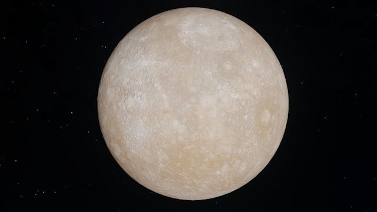
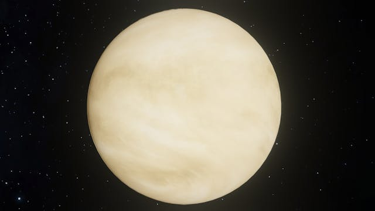
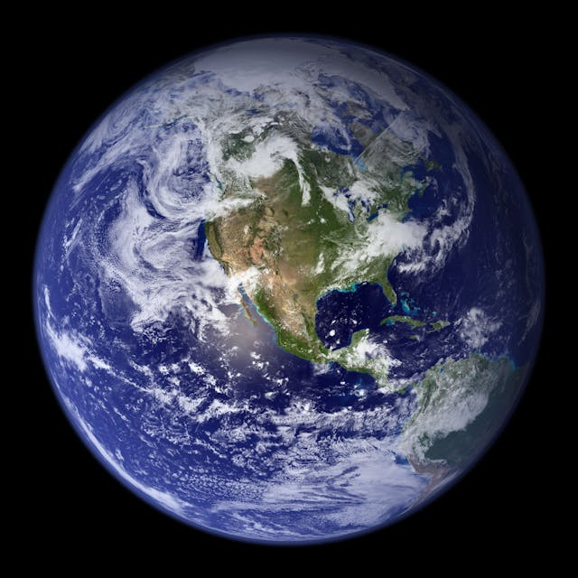
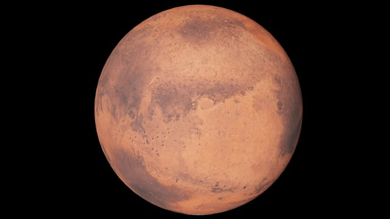
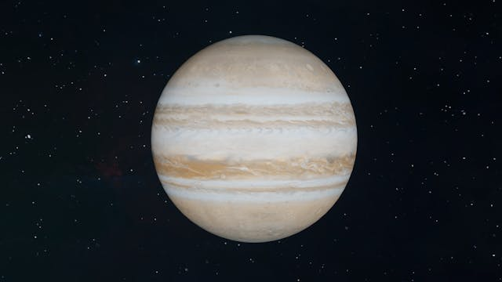
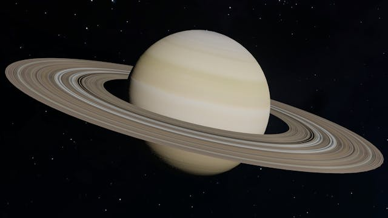

Mercury
Mercury, the innermost planet of our Solar System, is a small, rocky world, named after the Roman messenger god because of its swift movement across the sky. Its surface is heavily cratered, similar to the Moon, reflecting a long history of impacts. Mercury's proximity to the Sun and its lack of a significant atmosphere contribute to its extreme temperature variations, the most extreme in the Solar System.
Five facts about Mercury
- Size (Diameter): 4,879 km
- Distance from the Sun: Approximately 57.9 million km
- Length of a Year (Orbital Period): About 88 Earth days
- Length of a Day (Rotation Period): About 59 Earth days
- Number of Moons: 0
Calculate your own weight on Mercury!
Venus
Venus, often called Earth's twin due to its similar size and mass, is shrouded in thick, toxic clouds of carbon dioxide and sulfuric acid, making it the hottest planet in our Solar System. Its surface, hidden beneath the cloud cover, is marked by mountains, volcanoes, and vast plains of solidified lava. Venus spins slowly in the opposite direction of most planets, leading to its unusual day-night cycle.
Five facts about Venus
- Size (Diameter): 12,104 km
- Distance from the Sun: Approximately 108.2 million km
- Length of a Year (Orbital Period): About 225 Earth days
- Length of a Day (Rotation Period): About 243 Earth days (retrograde rotation)
- Number of Moons: 0
Calculate your own weight on Mercury!
Earth
Earth, the third planet from the Sun, is the only world known to support life, thanks to its liquid water and protective atmosphere. It boasts a diverse range of climates and terrains, from icy poles to tropical rainforests, and is the only planet not named after a mythological figure. Earth's dynamic surface is constantly reshaped by the movement of tectonic plates, weathering, and erosion.
Five facts about Earth
- Size (Diameter): 12,742 km
- Distance from the Sun: Approximately 149.6 million km
- Length of a Year (Orbital Period): About 365.25 days
- Length of a Day (Rotation Period): 24 hours
- Number of Moons: 1
Calculate your own weight on Mercury!
Mars
Mars, the red planet, captivates with its stark, reddish appearance, caused by iron oxide on its surface. It's home to the highest volcano and the deepest, longest canyon in the Solar System. Evidence suggests Mars once had liquid water, raising the possibility that it could have supported life. Today, it's a frozen desert, with exploration missions seeking clues about its past and potential for future colonization.
Five facts about Mars
- Size (Diameter): 6,779 km
- Distance from the Sun: Approximately 227.9 million km
- Length of a Year (Orbital Period): About 687 Earth days
- Length of a Day (Rotation Period): About 24.6 hours
- Number of Moons: 2
Calculate your own weight on Mercury!
Jupiter
Jupiter, the largest planet in our Solar System, is a gas giant primarily composed of hydrogen and helium. Its most notable feature is the Great Red Spot, a gigantic storm larger than Earth that has raged for centuries. Jupiter's extensive system of rings and moons, including the four large Galilean moons, makes it a miniature solar system unto itself.
Five facts about Jupiter
- Size (Diameter): 139,820 km
- Distance from the Sun: Approximately 778.5 million km
- Length of a Year (Orbital Period): About 4,333 Earth days (11.86 Earth years)
- Length of a Day (Rotation Period): About 9.9 hours
- Number of Moons: 79
Calculate your own weight on Mercury!
Saturn
Saturn is perhaps best known for its stunning rings, made up of ice and rock particles. Another gas giant, it's not only distinguished by its rings but also by its numerous moons, including Titan, the second-largest moon in the Solar System and one of the most Earth-like worlds we know of. Saturn's low density means it would float if placed in a sufficiently large body of water.
Five facts about Saturn
- Size (Diameter): 116,460 km
- Distance from the Sun: Approximately 1.434 billion km
- Length of a Year (Orbital Period): About 10,759 Earth days (29.5 Earth years)
- Length of a Day (Rotation Period): About 10.7 hours
- Number of Moons: 82
Calculate your own weight on Mercury!
Uranus

Uranus, the ice giant, is unique for its tilted axis, which causes it to rotate on its side. This unusual orientation leads to extreme seasonal variations. Uranus is encircled by a faint ring system and has 27 known moons. Its blue-green color is due to methane in its atmosphere, which absorbs red light and reflects blue light.
Five facts about Uranus
- Size (Diameter): 50,724 km
- Distance from the Sun: Approximately 2.871 billion km
- Length of a Year (Orbital Period): About 30,687 Earth days (84 Earth years)
- Length of a Day (Rotation Period): About 17.2 hours (retrograde rotation)
- Number of Moons: 27
Calculate your own weight on Mercury!
Neptune
Neptune, the farthest known planet from the Sun, is a mysterious, blue world, driven by the strongest winds in the Solar System. Like Uranus, it's considered an ice giant, with a deep, thick atmosphere and a possibly solid core. Neptune's dynamic weather systems include dark spots similar to Jupiter's Great Red Spot, indicating storms in its atmosphere.
Five facts about Neptune
- Size (Diameter): 49,244 km
- Distance from the Sun: Approximately 4.495 billion km
- Length of a Year (Orbital Period): About 60,190 Earth days (165 Earth years)
- Length of a Day (Rotation Period): About 16.1 hours
- Number of Moons: 14